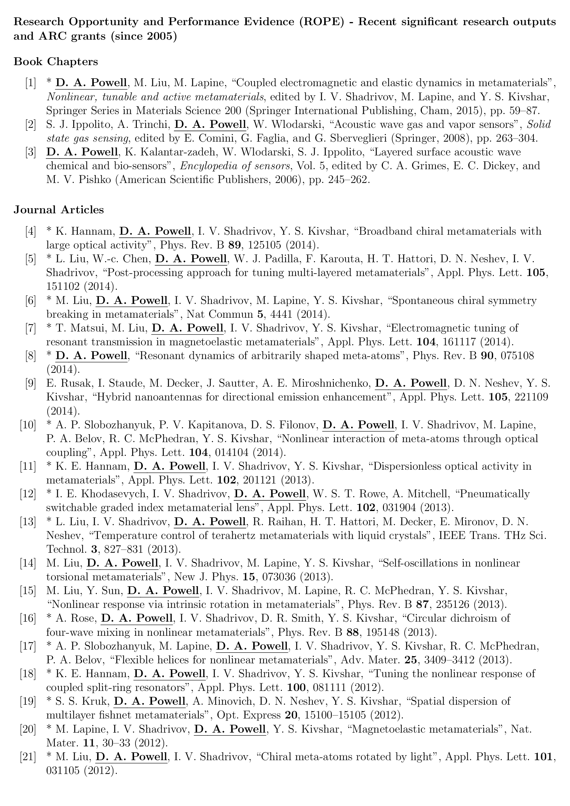

Automatically generating a publication list in LaTeX
The problem
Living as I do on the academic treadmill, I spend a lot of my time writing grant applications. The major funding agency in Australia for non-medical research is the Australian Research Council, so I often regularly to update my academic publication list according to their requirements:
- List all publications over the past 10 years (can vary depending on the scheme or round)
- Separate them into journal papers, books, book chapters, conference proceedings etc.
- Put a star next to the ones which are relevant to the particular project proposal.
- Use 12 point font with minimum 0.5cm margins all around the page
- Past grants awarded need to be listed, along with the papers that report their outcomes.
- Not a requirement, but most people like to underline their own name
The formatting instructions are apparently taken quite seriously, with grant applications having been ruled ineligible for violations.
Current "state of the art"
Most of my colleagues have an MS Word document listing all their publications, which they update for each round. I originally did this too, but I find it rather unappealing for the following reasons:
- It's a nuisance to manually format all bibliography entries to be consistent
- Manually updating can easily lead to missed or duplicate entries
- For numbered style bibliographies, the publications belonging to each grant need to be changed every time a paper is added.
- Sometimes Word introduces seemingly random font and style changes
- The number of years of publication history required sometimes changes between schemes and rounds
- I much prefer the quality of typesetting produced by LaTeX
- The publication list is essentially a database, and I find something philosophically wrong with using MS Word as a database tool
The solution
My solution was to create a LaTeX class and template which generates the document in a fairly automated manner. By keeping my publication database up to date in reference management software (which I do anyway), I can generate and update the required document fairly easily.
I organise the PDFs of my collection of papers with Zotero, an open-source cross platform tool to manage your papers. It's along a similar vein to EndNote and Mendeley, so this solution should be adaptable by users of those programs. I keep my own publications in a collection, so they are easy to find and export.
Make sure that each publication has the correct Item Type for a journal article, book chapter etc. This will ensure it gets listed under the appropriate category.
Ensure that each bibliography entry has a fixed BibTeX key, that doesn't change if your library changes. In Zotero, the best way to do this is with the Better BibTex plugin. Select all the entries, right click, and in the menu select "Generate BibTeX key".
Export the entries to BibLaTeX format (BibTeX format should be okay too) using the Better BibLaTeX exporter in Zotero.
Download the arcpubs LaTeX class and template. Rename example.tex to something else if you want, then open it in your favourite LaTeX editor.
The required changes to this file are fairly straightforward:
- Change the \addbibresource line to the name of your .bib file. You can have multiple calls if you need more than one file to be included.
- The \StartYear command indicates that only publications from this year or later will be included
- The \Author command should contain your surname, for the purposes of underlining it. Any publications not containing that name will be excluded from the list, so if you have a .bib file for your whole research group, your publications will be extracted.
- The \addtocategory{relevant} gives the BibTeX keys of all publications relevant to this proposal, which will be starred.
- In the table at the bottom of the page, list existing ARC grants, and cite any papers relevant to them.
Compile the latex file to generate the pdf. Note that instead of BibTeX, BibLaTeX is used, because I needs its powerful features for filtering by year, category. Assuming you didn't rename the .tex file, run:
pdflatex example biber example pdflatex example
If everything went smoothly, then you should have nice PDF output with the first page looking something like this.
Okay, I admit that's a lot of steps for a supposedly automated process, but after you've done it once it's quite quick and easy to keep it up to date. I expect that it could also be quite useful for anyone else trying to keep their academic CV up to date, even if they don't care about the particular requirements of the ARC.
Tips and potential problems
Most windows users will have installed LaTeX using the MiKTeX distribution. Unfortunately the 64 bit version of MikTex is missing the biber command. However, the 32 bit version can be downloaded, and will work just fine. See these instructions.
It is necessary to check carefully over the document just to make sure that text hasn't run outside the margins, which occasionally happens when LaTeX cannot hyphenate long words or URLs.
The underlining of author name and selection of which entries to include is based on the surname, so you may get strange results if one of your co-authors has the same surname.
Comments !